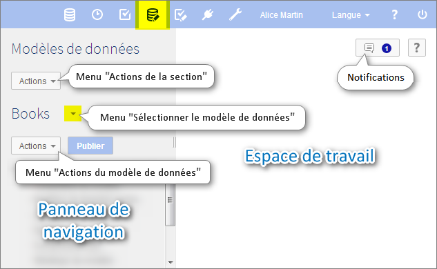

Introduction aux modèles de données
Contenu de la section
Présentation
La fonction d'un modèle de données
La première étape de toute gouvernance de données dans EBX5 est le développement d'un modèle de données. Le but d'un modèle de données est de définir la structure des données gérées dans le référentiel en termes d'organisation, de types de données, et de relations sémantiques. Une fois que le modèle de données a été défini et publié, il devient possible de créer des jeux de données à partir de celui-ci.
Afin de définir un modèle de données dans le référentiel, créez d'abord un nouveau modèle de données, puis définissez sa structure et les propriétés de ses éléments (tables, champs et groupes). Le modèle de données ainsi défini doit être publié pour devenir disponible. Les utilisateurs pourront créer des jeux de données à partir de cette publication qui contiendront les données gérées par le référentiel EBX5.
Concepts de base utilisés dans la modélisation des données
Une compréhension des termes suivants est nécessaire pour commencer la création de modèles de données :
Utilisation de l'interface utilisateur de la section Modèles de données
Navigation dans le Data Model Assistant
Les modèles de données peuvent être importés, édités, et publiés dans la section Modèles de données. Le Data Model Assistant de EBX5 facilite le développement des modèles de données.
Note
Seuls les utilisateurs autorisés peuvent accéder à cet écran via la 'Perspective avancée'.

Le panneau de navigation est organisé selon les sections suivantes :
Configuration | La configuration technique du modèle de données. |
Propriétés du modèle | Les propriétés techniques du modèle de données. |
Modèle de données inclus | Les modèles de données inclus dans le modèle courant. Les types de données définis dans les modèles inclus peuvent être réutilisés dans le modèle de données courant. |
Librairie de composants | Les composants Java utilisables dans le modèle de données. |
Services | Les services disponibles dans le modèle de données. |
Composants Ajax | Les composants Ajax disponibles dans le modèle de données. |
'Bindings' du modèle | Les propriétés des types Java générés depuis le modèle de données. |
Réplications | Les unités de réplication disponibles dans le modèle de données. |
Structure de données | Structure du modèle de données. Définit les relations entre les éléments du modèle de données et permet d'accéder à la définition de chaque élément. |
Types de données simples | Types simples réutilisables définis dans le modèle de données courant. |
Types de données complexes | Types complexes réutilisables définis dans le modèle de données courant. |
Types de données simples inclus | Types simples réutilisables définis dans un modèle de données inclus dans le modèle courant. |
Types de données complexes inclus | Types complexes réutilisables définis dans un modèle de données inclus dans le modèle courant. |
Voir aussi
Icônes des éléments du modèle de données


Concepts apparentés
 Sommaire du guide utilisateur
Sommaire du guide utilisateur